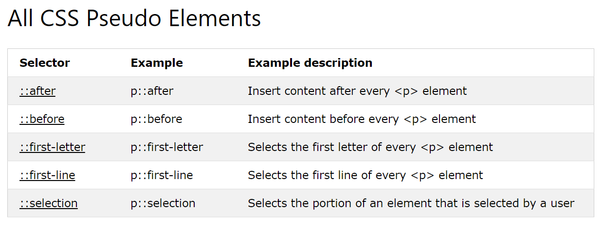

CSS Pseudo-classes
A pseudo-class is used to define a special state of an element.
Style an element when a user mouses over it
Style visited and unvisited links differently
Style an element when it gets focus
